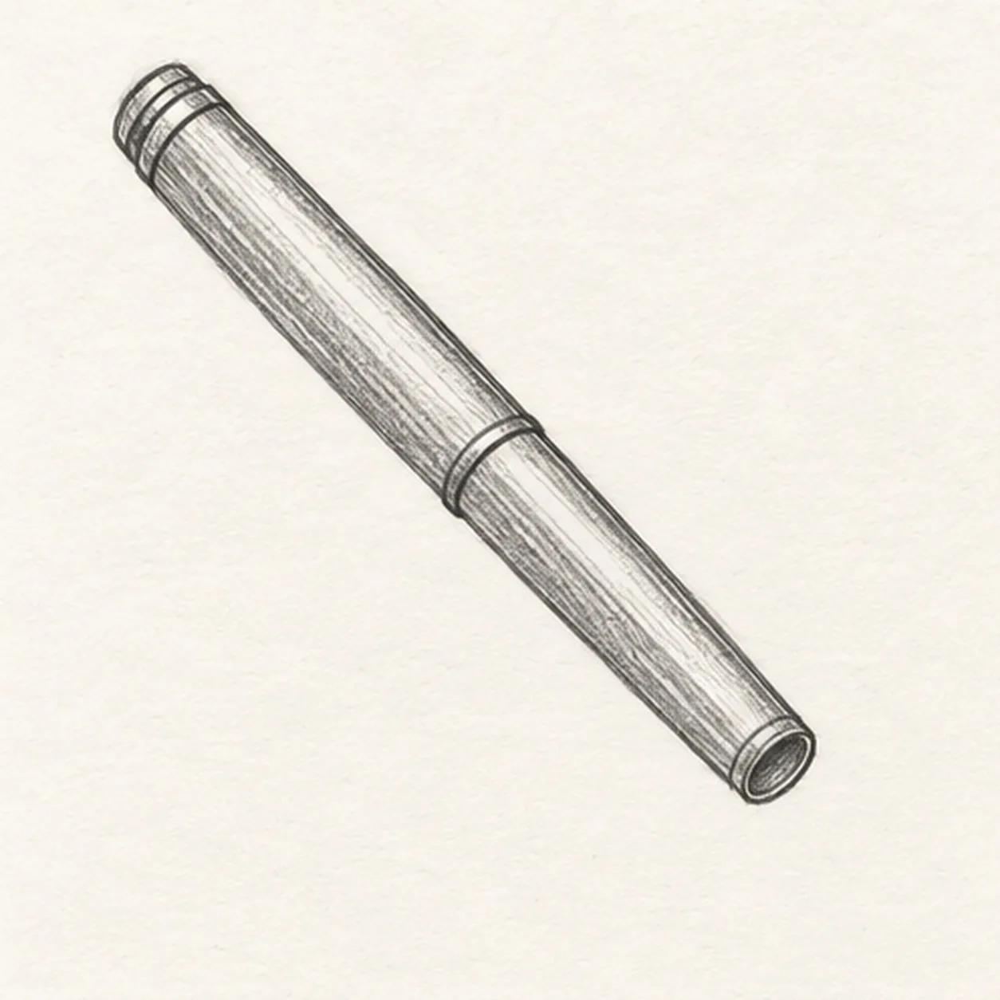
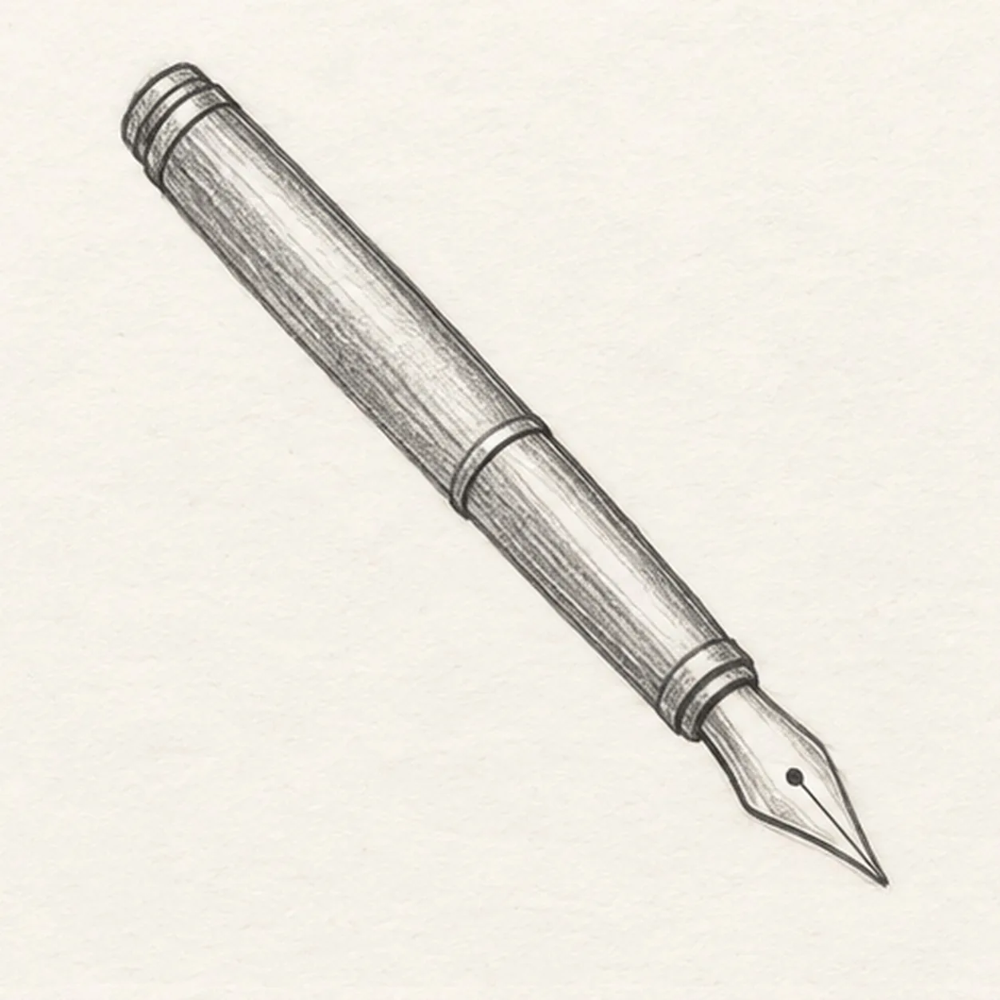
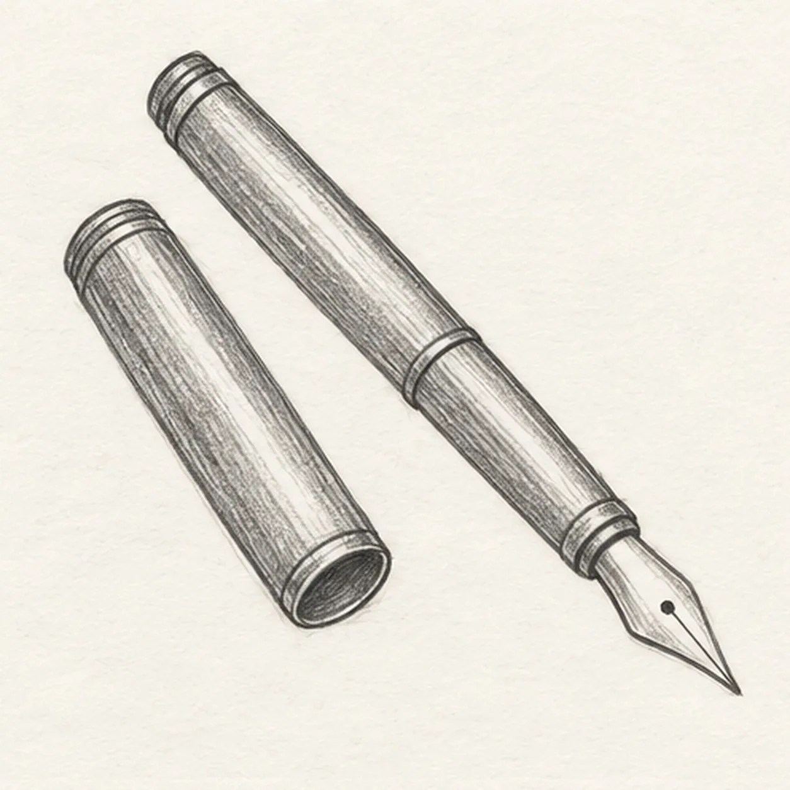
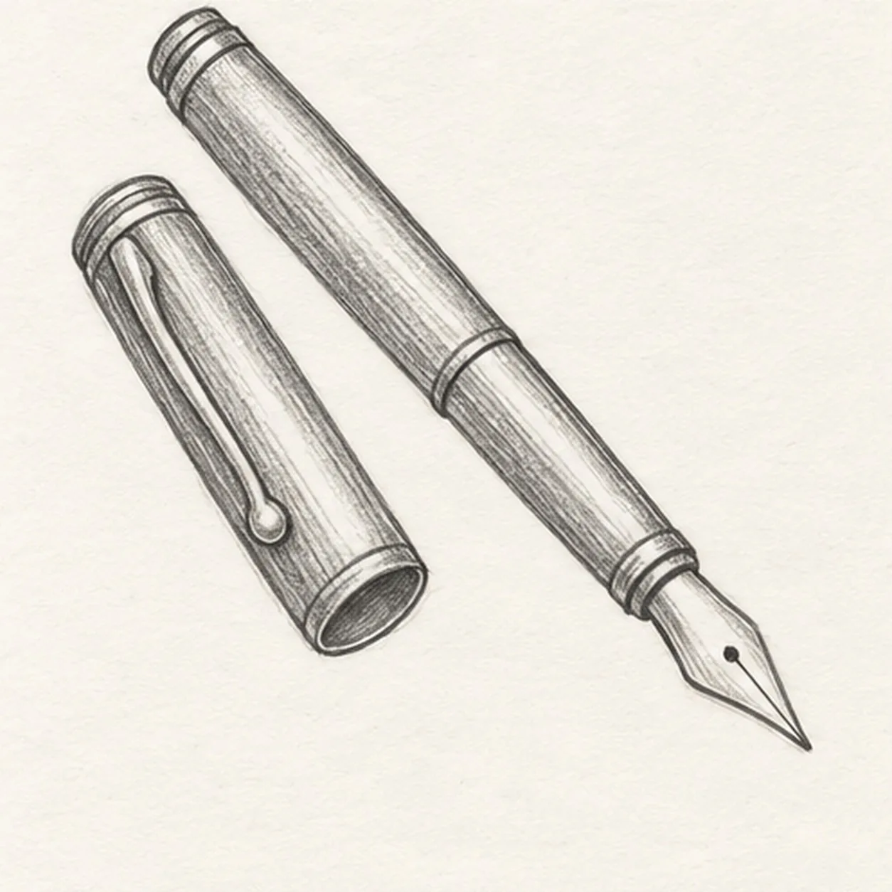
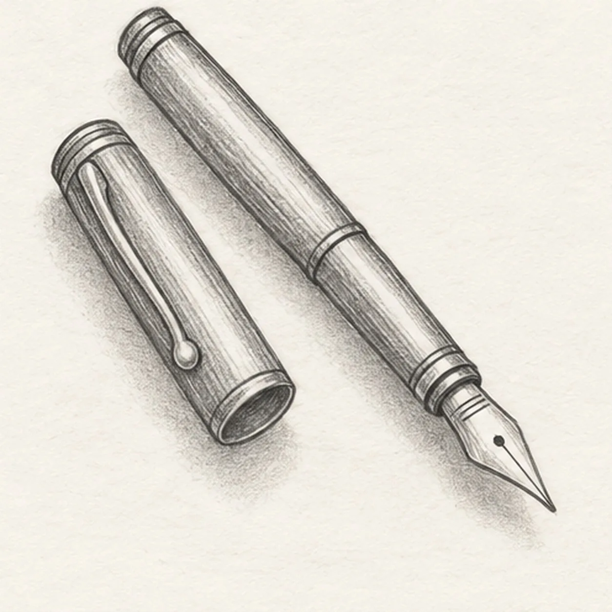

From the archive
Let's draw a fountain pen
Treat this as one small practice round: build the subject lightly, notice the shapes, then darken only the lines that help the finished sketch.
-
01

Place the pen barrel
Draw one long slightly tapered pen barrel diagonally from upper left toward lower right, leaving its lower end ready for the nib.
Sketch tip: Set the diagonal first; the upper barrel should be longer than the lower grip.
-
02

Attach the nib
From the lower barrel end, taper a pointed metal nib toward the lower right and draw one short slit down its center.
Sketch tip: Keep the nib narrow and centered on the barrel axis.
-
03

Set down the cap
To the left of the pen, draw a separate narrow cap parallel to the barrel; close its upper tip and add a small oval opening at its lower end.
Sketch tip: Compare the two diagonals before closing the cap opening.
-
04

Attach the cap clip
From the cap upper band, pull one slender curved clip down its outer side and round its end; leave the pen and nib untouched.
Sketch tip: Keep the clip visibly attached near the cap top and inside the cap silhouette.
-
05

Ground the pen and cap
With the side of the pencil, add a broken cast shadow below both objects, darkest near the cap opening and nib. Keep the pen, cap and clip unchanged.
Sketch tip: Let the shadow break into light patches rather than outlining it.
-
06

Shade the fountain pen
Deepen the established barrel and cap edges with 2B pencil, shade one side of the nib and soften the existing ground shadow. Leave small paper highlights.
Sketch tip: Pull graphite lengthwise along the metal to retain the handmade texture.